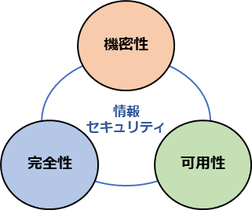

11-2. 情報セキュリティマネジメントシステム（ISMS）
［ISO/IEC27001:2022, 27002:2022］
ISMSとは、情報セキュリティマネジメントシステム（Information Security Management System）の略称で、組織の情報セキュリティリスクを適切に管理するための仕組みのことです。ISMSに関する国際規格がフレームワークとして存在していることから、ISMSはセキュリティフレームワークの中でも代表的なものとなっています。ISMSが達成すべきことは、リスクマネジメントプロセスを適用することによって情報の機密性、完全性および可用性をバランスよく維持・改善し、リスクを適切に管理しているという信頼を利害関係者に与えることにあります。5また、ISMSには技術的対策に加えて、従業員の教育・訓練、組織体制の整備なども含まれます。
5 ISMS-AC.”ISMSとは”. https://isms.jp/isms/

図36. 情報セキュリティの3要素
（出典）ISMS-AC「ISMS適合性評価制度」をもとに作成
ISMSのための要求事項をまとめた国際規格が、 ISO/IEC 27001です。組織がISMSを確立し、実施し、維持し、継続的に改善するための要求事項の提供を目的として作成されています。ISMSの確立および実施について、組織の行うべき事項が項目ごとに記述されたものとなっており、この規格は以下のために用いることができます。6
6 ISMS-AC.”ISMSとは”. https://isms.jp/isms/
組織のマネジメントおよび業務プロセスを取り巻くリスクの変化への対応
JIS Q 27001（ISO/IEC 27001）では、組織は、自らのニーズおよび目的、情報セキュリティ要求事項、組織が用いているプロセス、並びに組織の規模および構造を考慮して、ISMSの確立および実施を行います。これは、多くの情報を取扱うようになっている、現代の組織のマネジメントおよび業務プロセスを取り巻くリスクの変化に対応できるように、組織基盤を構築する抜本的な業務改革をする目的に適しています。
情報セキュリティ要求事項を満たす組織の能力を内外で評価するための基準
JIS Q 27001（ISO/IEC 27001）は、情報セキュリティ要求事項を満たす組織の能力を、パフォーマンス評価および内部監査などにより、組織の内部で評価する基準としても、取引先の顧客などから受ける第二者監査、あるいは、審査登録機関による認証のための第三者監査の基準としても用いることができます。
（出典）ISMS-AC.”ISMSとは”. https://isms.jp/isms
One Point